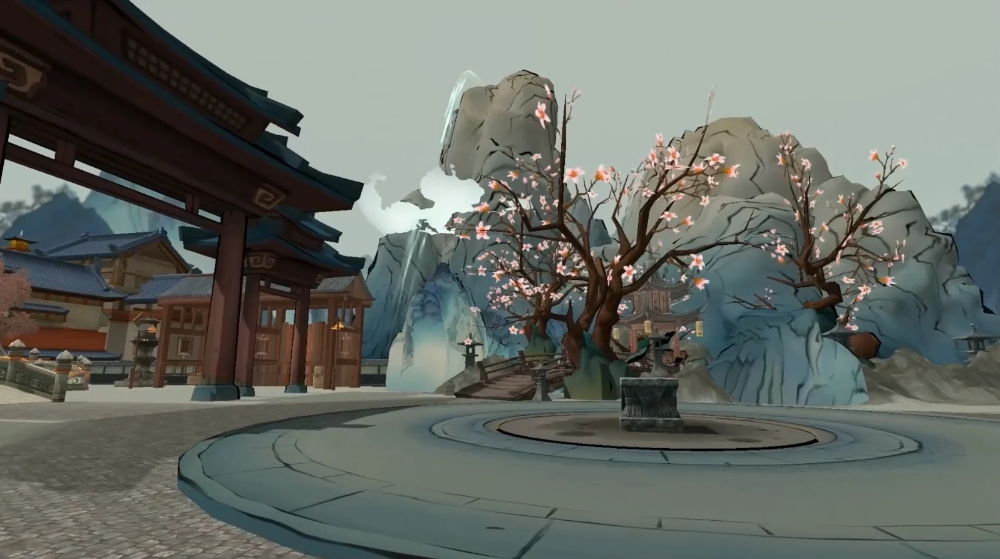
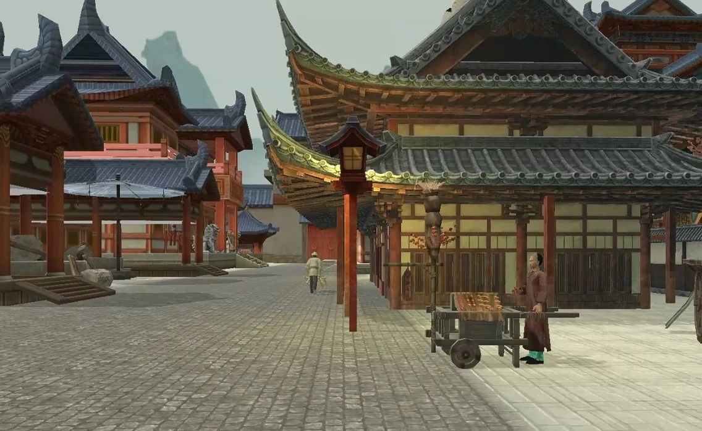
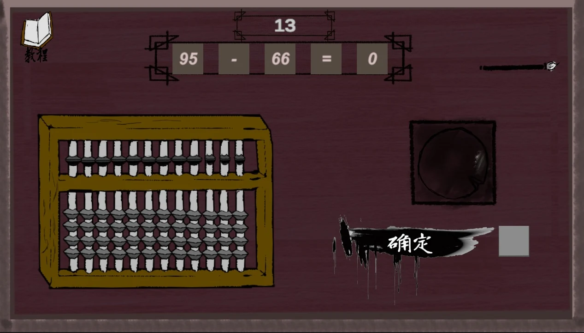
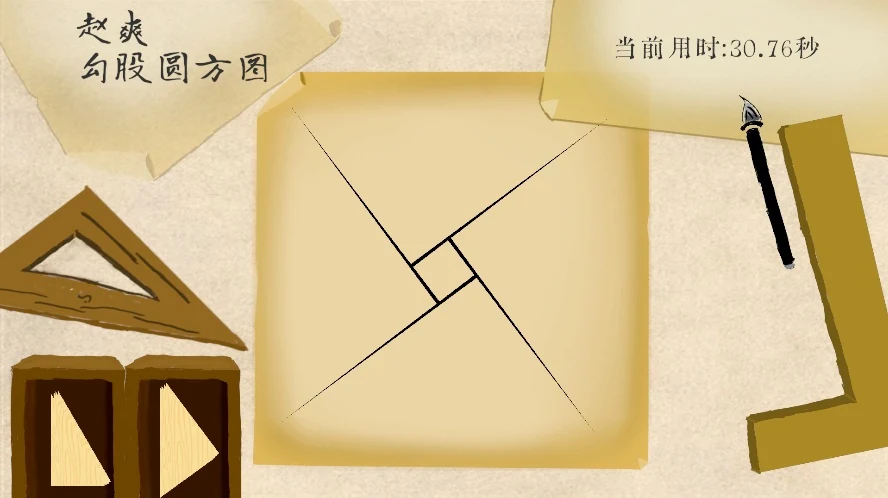
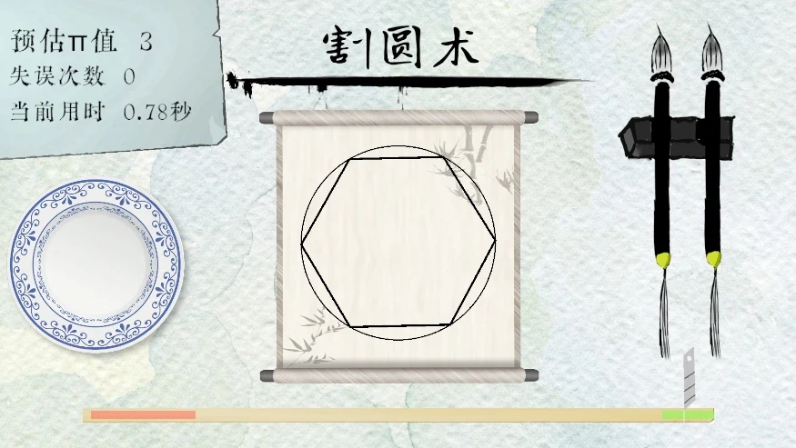
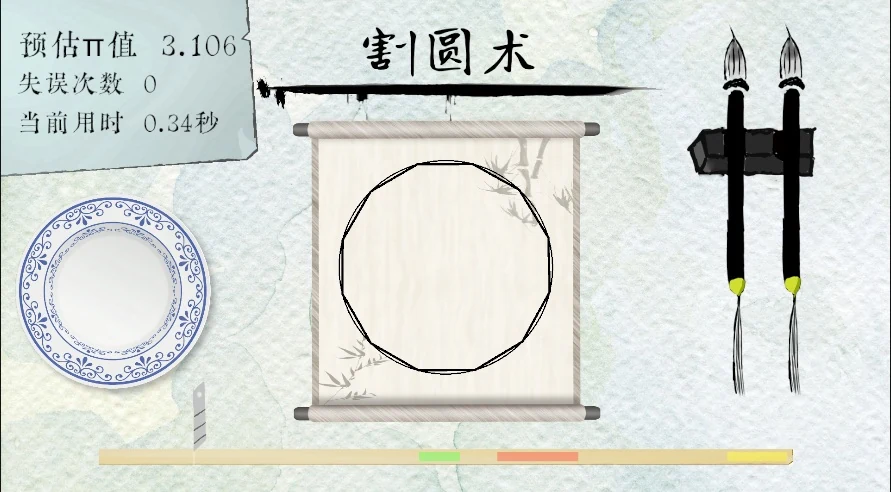
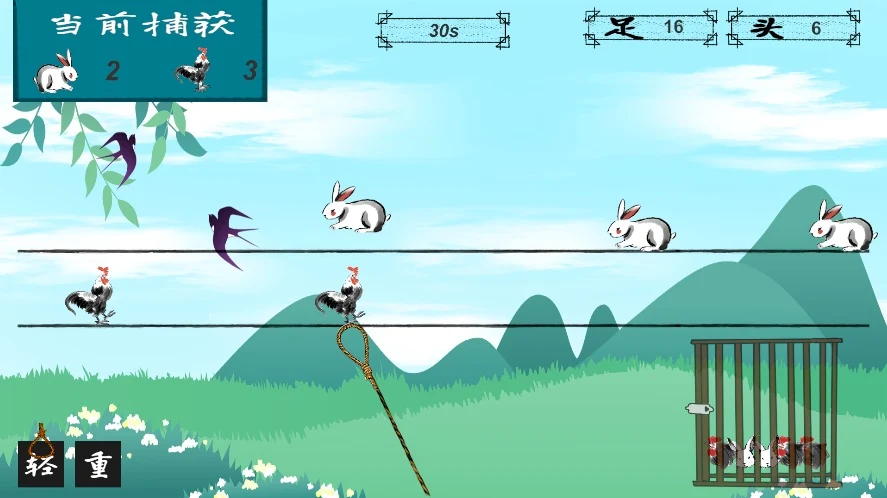
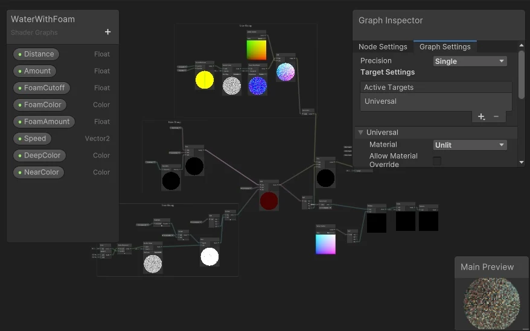
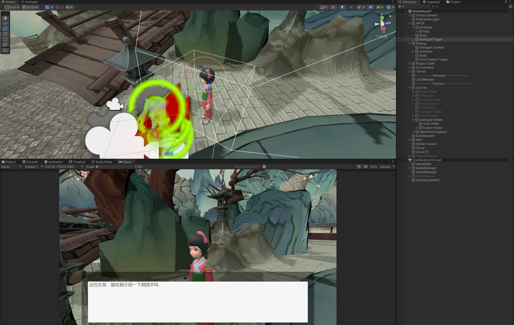

算学道旅Learning through a world of puzzles.
把古代算学的知识结构转为可操作的关卡，让勾股、割圆与算术问题进入一段可探索的旅程。

01用主场景连接四种数学交互
《算学道旅》围绕中国古代算学，将算珠、勾股、割圆与鸡兔问题放进同一个可探索场景。主场景负责引导和连接独立小游戏，每个小游戏则让一种数学关系对应一组具体动作。玩家既要理解关系，也要通过操作提交答案。


设计时先区分知识目标和操作目标：前者是希望玩家理解的关系，后者是玩家在屏幕上能够执行、观察和修正的行为。两者需要连接，但不应只用一段长说明替代交互。
02算珠：把位值关系变成操作
算珠关卡以算盘规则组织计算：玩家读取算式，再用算珠表示结果。与直接输入数字相比，移动算珠让个位、十位和不同珠位的贡献可被观察，也使错误可以定位到某一位或某一步操作。


设计案包含限时和连续计算的安排。其意义是提供短回合反馈，但教育目标仍应优先于操作速度；否则玩家可能只是在赶时间，而没有理解位值变化。
03勾股与割圆：让几何关系可见
勾股：从数字关系进入几何匹配
设计案将三角形选择、边长关系与拼图操作联系起来。玩家需要辨别符合条件的组合，再完成摆放，而不是只背出一个公式。
用直角三角形的边长关系组织匹配和拼合；这里是关卡的数学基础。


割圆：用连续操作表现逼近
割圆关卡把圆与多边形的关系、计算信息和操作反馈放在一起。设计稿曾探索按时机完成分割，最终画面中可观察到多边形与圆的变化。此处重点解释交互如何呈现逼近过程，不将早期按键／限时方案等同于最终全部实现。




04鸡兔同笼：把计算结果接到行动
设计将鸡兔数量关系与抓取操作结合。玩家先依据头数和脚数求出目标，再选择方向和力度获取所需对象。计算和动作各有清楚的作用：前者确定应该抓多少，后者决定如何完成收集。
r = (F − 2H) / 2，c = H − r
c、r 为鸡与兔数量；H、F 为给定的头数和脚数。


如果操作失败掩盖了数学判断，教育反馈就会含混。因此，设计上需要区分“答案算错”和“没有抓到”：玩家应知道该重新思考数量，还是调整操作时机。
05场景、表现和流程怎样连起来




作品还包含曲线书写、AI 对话和风格化渲染等协作功能。对我的工作而言，更重要的是让场景入口、小游戏完成、任务反馈和后续解锁形成连续路径，避免每个关卡只是孤立演示。
06个人贡献与团队范围
我的工作
参与总体设计，承担组织协调、主场景与关卡搭建、角色基础操作与关卡基础玩法。
协作与基础
数学小游戏、渲染、AI、资源与测试由团队协作；图中角色与地图资源不全部作为原创个人美术，不分发整套素材。
这段经历让我开始把“内容结构”当成关卡设计的一部分：知识如何拆分、操作如何表达、玩家如何从一个概念走向另一个概念。周期按大二下开学至 5 月的回忆与赛事安排估计。